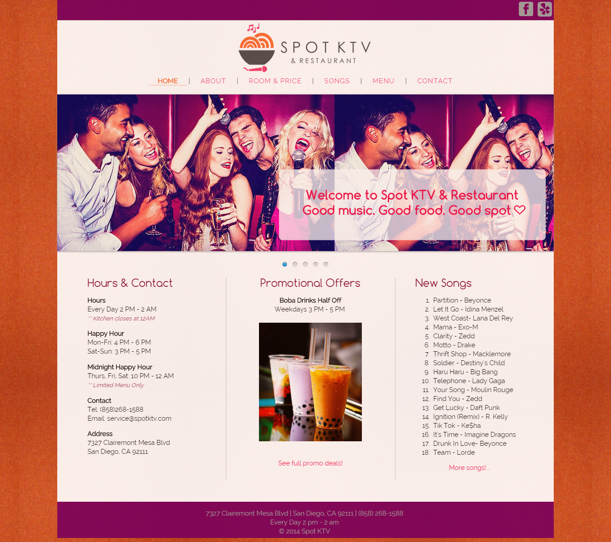
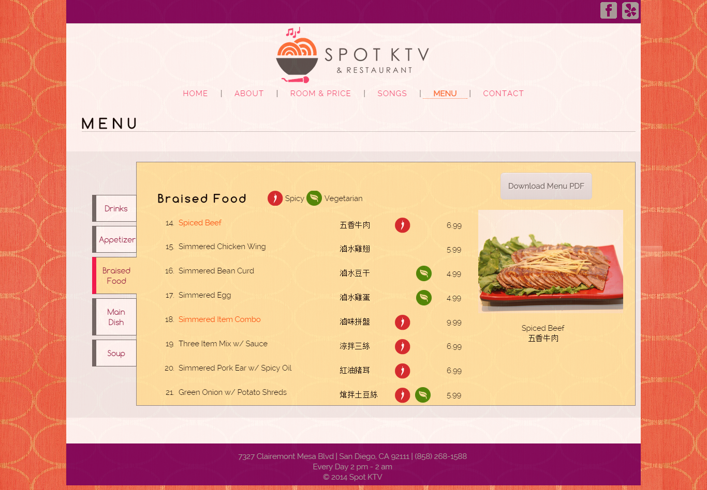
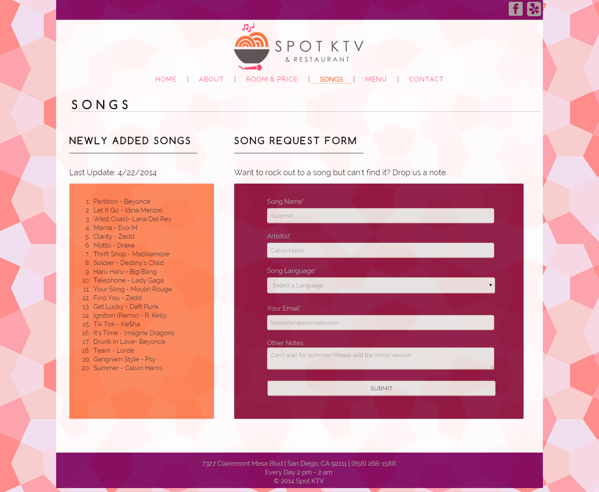
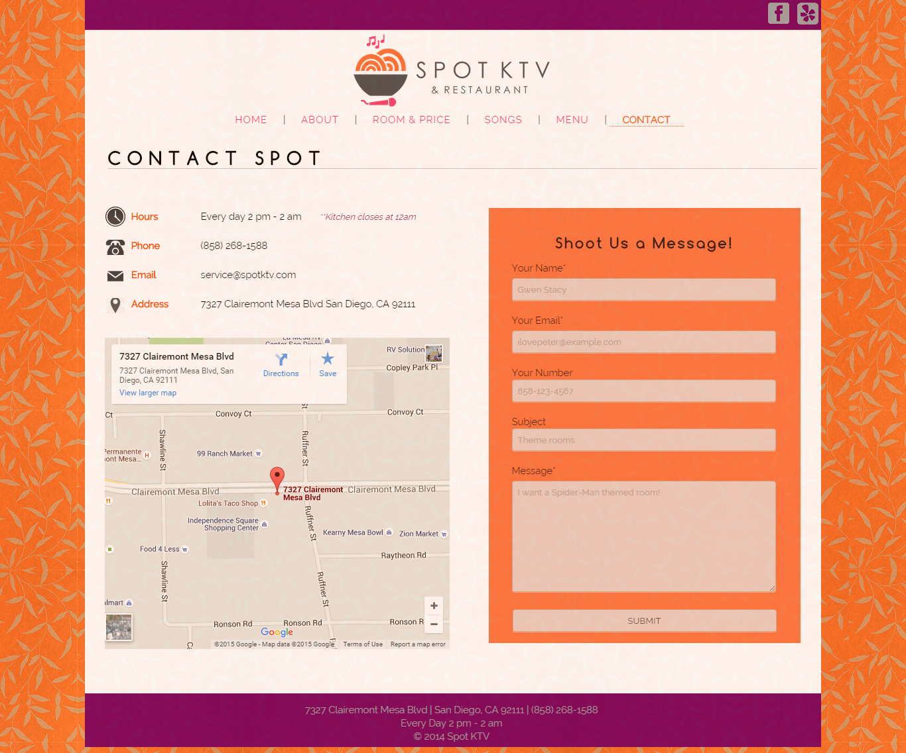

Spot KTV: Web Development
Date: Spring 2014
Created a website for a local San Diego business called Spot KTV and Restaurant.
The project was part of a Professional Web Design class at UC San Diego along with two other people. We began from interviewing the owner and discussing the brand/image he wanted as well as interviewing his current and potential customers. We created a mood board, color palette, and low fidelity prototypes. For the final site, I worked on the home page and the menu page. In the process, I became familiar with using HTML/CSS and Javascript. At the end of the project, we were able to sell our site to the owner.



